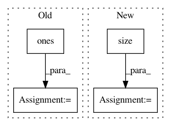

0e0d1e590e8cdae50d04a96617ea6601446f99fb,torchaudio/transforms.py,PadTrim,__call__,#PadTrim#Any#,104
Before Change
if self.max_len > tensor.size(0):
pad = torch.ones((self.max_len - tensor.size(0),
tensor.size(1))) * self.fill_value
pad = pad.type_as(tensor)
tensor = torch.cat((tensor, pad), dim=0)
elif self.max_len < tensor.size(0):
tensor = tensor[:self.max_len, :]
return tensor
After Change
"Too many channels ({}) detected, look at channels_first param.".format(tensor.size(self.ch_dim))
if self.max_len > tensor.size(self.len_dim):
padding_size = [self.max_len - tensor.size(self.len_dim) if i == self.len_dim
else tensor.size(self.ch_dim)
for i in range(2)]
pad = torch.empty(padding_size, dtype=tensor.dtype).fill_(self.fill_value)
tensor = torch.cat((tensor, pad), dim=self.len_dim)
elif self.max_len < tensor.size(self.len_dim):
tensor = tensor.narrow(self.len_dim, 0, self.max_len)
In pattern: SUPERPATTERN
Frequency: 3
Non-data size: 4
Instances
Project Name: pytorch/audio
Commit Name: 0e0d1e590e8cdae50d04a96617ea6601446f99fb
Time: 2018-12-25
Author: david@da3.net
File Name: torchaudio/transforms.py
Class Name: PadTrim
Method Name: __call__
Project Name: jadore801120/attention-is-all-you-need-pytorch
Commit Name: bed0a0ae26451c9897cf1ee0f7302e42eba9b42c
Time: 2018-08-23
Author: yhhuang@nlg.csie.ntu.edu.tw
File Name: transformer/Models.py
Class Name:
Method Name: get_attn_subsequent_mask
Project Name: osmr/imgclsmob
Commit Name: 7c3d0a5ea7405fe74cc31f5553f7c04d9804d42e
Time: 2019-03-02
Author: osemery@gmail.com
File Name: pytorch/pytorchcv/models/isqrtcovresnet.py
Class Name: Covpool
Method Name: forward